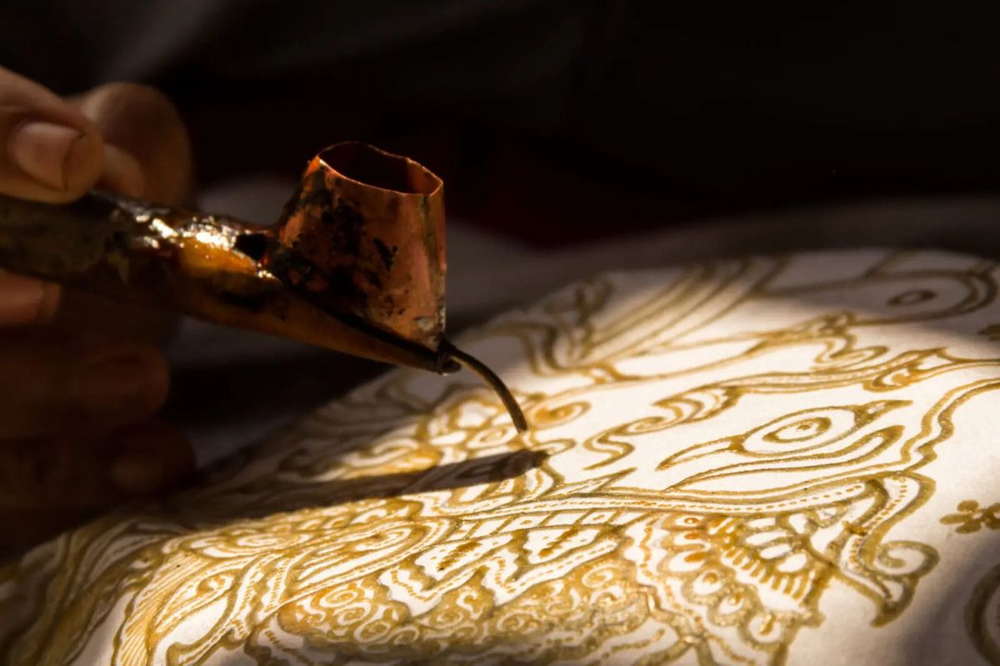
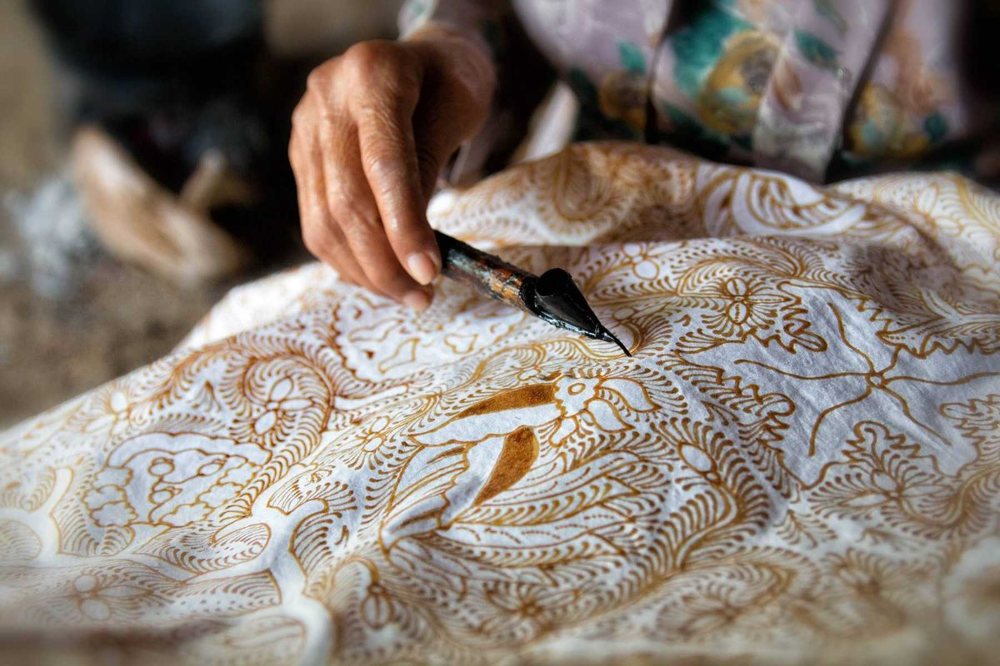

Makna di Balik Setiap Karya
Lebih Sekedar Kerajinan, Ini adalah Identitas Budaya.
Kerajinan tradisional merupakan salah satu bentuk kekayaan budaya Nusantara yang mencerminkan kreativitas dan keterampilan masyarakat. Setiap karya dibuat dengan teknik khas yang diwariskan secara turun-temurun, serta memiliki nilai seni dan filosofi yang berkaitan erat dengan kehidupan dan tradisi daerah asalnya.
Keindahan kerajinan Nusantara tidak hanya terlihat dari bentuk dan motifnya, tetapi juga dari makna yang terkandung di dalamnya. Melalui seni batik, anyaman, ukiran, dan gerabah, masyarakat terus menjaga identitas budaya sekaligus melestarikan warisan leluhur agar tetap dikenal oleh generasi mendatang.
